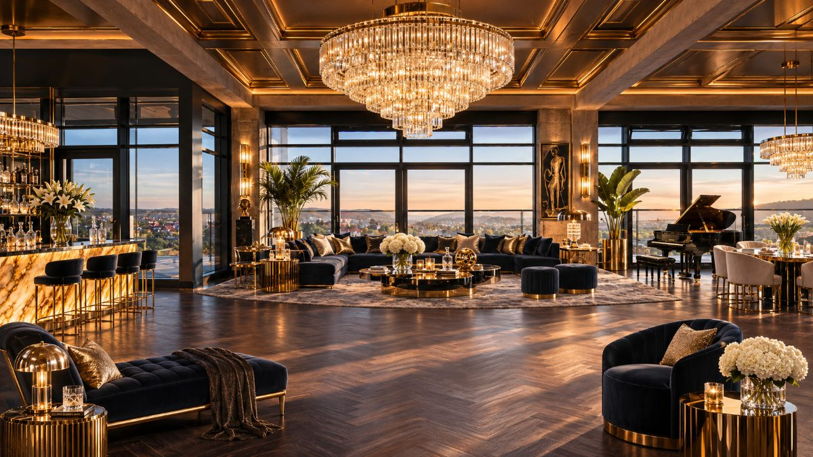
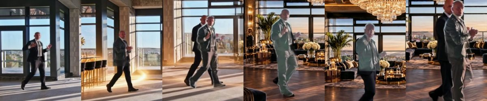

frantisekdron / ai-uprava-videaInternínoindex18. 11. 2026 · FD Studio
README.md
AI úprava hotového videa: Higgsfield Miracle, nové modely a naše workflow
Testy na skutečné scéně z Vanguardu: Honza prochází prázdný loft a prostor se za ním mění na luxusní interiér. Na šířku i na výšku, 720p, každý model se stejným zadáním a stejnou referencí. Všechno měřené: podoba Honzy, jestli drží dráhu, skutečně odečtené kredity.
242,04 krutraceno z 250 povolených
13nových testů + 2 srovnání z 13. 11.
9modelů a režimů pro úpravu videa
0 krMiracle – v MCP zatím není
Verdikt v šesti bodech
Miracle zatím použít nejde. V Higgsfield MCP 18. 11. není – hledání modelů ani aplikací ho nenajde. Podle ukázky je v uzavřené betě pro vybrané testery a „brzy přes MCP“. Nic jsme za něj neplatili; až se objeví, je níž hotový plán prvních testů.
Na proměnu prostoru za člověkem vyhrál Kling 4.0 video-edit (#07, #08). Udělá ji sám v jedné generaci, na šířku i na výšku, drží Honzovu dráhu i časování (odchylka 0,3 % šířky obrazu) a v 720p stojí 16,5 kr za 6 s (2,75 kr/s).
Když jde hlavně o tvář, dál platí Genjutsu (plné) (#10): podoba 0,80 – nejvíc ze všech testů. Jenže 49 kr v 720p a 140 kr v 1080p a proměnu v čase neumí.
Nejbližší náhrada Miraclu pro úpravu hotového AI klipu je FLUX 3 Video Edit (#12): přepne den na modrou hodinu s rozsvícenými lustry a zbytek nechá. Účtuje 1 kr za sekundu, tedy ~6 kr za klip. „RAW“ vzhled zvládl jen napůl (#13).
Gemini Omni Flash 1.2 je levná zkouška stylu (15,75 kr) se stabilní tváří, ale Honzu posouvá – pod výsledek nejde vrátit originál.
Nepoužívat: Kling 4.0 Flash (dražší než plný Kling 4.0 a horší), Genjutsu Lite (vyměnil Honzu za jiného člověka a zastavil kameru), Seedance 2.5 Flash na úpravu videa (39 kr bez výhody).
Co je Higgsfield Miracle
Higgsfield ho představil 17. 11. reklamním videem (v Učebně zdroj ig-Df26HDYCs62). Vlastními slovy, co ukazuje:
Funkce v ukázce
Co to znamená
Rozklad na vrstvy
Hotové AI video, kde je všechno „zapečené“ do jednoho obrazu, rozloží na samostatně upravitelné vrstvy (postava, pozadí, světlo, prvky) s přesností na pixel.
Úprava jedné vrstvy v reálném čase
Slovy řekneš, co změnit, a nástroj si k tomu vytvoří ovladač: velikost prvku („zvětši hlavu“), rychlost pozadí, měkkost a směr světla.
Kontrola změn
Náhled, kde přesně úprava proběhla a co zůstalo netknuté.
Znalost reálného světa
Úprava podle aktuálního kontextu: oblečení podle dnešního počasí v New Yorku, billboard s dnešním programem.
RAW a vlastní grade
„Neupravený, RAW vzhled“ a pak vlastní barvení – AI klip přestane mít napevno daný look.
Stav k 18. 11. 2026Uzavřená beta, „brzy na Higgsfieldu přes MCP“, cena neznámá. Ověřeno v MCP účtu honza@: models_explore search "miracle" → prázdné, apps_search "miracle" → prázdné. Všechno v tabulce je z reklamy, ne z vlastního testu.
Kde ho použijeme, až bude
Funkce Miraclu
Náš dnešní problém
Příklad
Oprava jednoho prvku
Kvůli jedné vadě se přegenerovává celý klip a rozbije se to, co už bylo schválené.
Test #11: gauč v cestě – posunout jen gauč. Vizualizace: špatné okno, cedule, ruka.
Směr a měkkost světla
AI klip stříhaný mezi natočené záběry má slunce z jiné strany.
S2 loft: srovnat směr slunce se záběrem před a po.
RAW + vlastní grade
AI klipy přicházejí teplé a „hotové“, Franta je pak barví proti jejich vůli.
Všechny AI vrstvy (V1–V5) barvit stejným gradem jako natočené – pravidlo „jen Frantovy nabarvené klipy“ zůstává.
Velikost a rychlost prvku
Ladění pohybu = nová generace.
Zpomalit pozadí v AI dronovém klipu, zvětšit dům v hooku.
Kontrola změn
Dnes ručně skillem kontrola-pred-klientem (dlaždice v plném rozlišení).
Automatický důkaz, že AI nezměnila stavbu (okna, dveře, zdi).
Reálný kontext
Sezóna a nápisy se řeší novým generováním.
Podzim ↔ léto, cedule „Na prodej“ / „Prodáno“, zimní verze do vánoční kampaně.
První testy po vydání (každý ~1 klip, cena přes get_cost a Frantovo „jo“): ① oprava jednoho prvku v #11 (gauč z cesty), ② RAW výstup z #01 + Frantův grade S2, ③ cena za sekundu proti FLUX 3 (1 kr/s).
Co je k dispozici dnes
Modely v Higgsfield MCP, které upravují hotové video. Ceny skutečně odečtené z účtu za klip 6,4 s v 720p (u Klingu se platí výstupní délka 6 s).
Model
ID
Co umí
Vstup
Cena 720p
kr/s
Kling 4.0
kling4_0
text→video, start/end + až 10 snímků, reference, video-edit (základní video + až 4 další videa a 10 obrázků), Kling elementy (7)
3–30 s, 720p/1080p, 21:9–9:16
16,5
2,75
Kling 4.0 Flash
kling_4_0_flash
totéž rychleji, jen 720p, bez end snímku
3–20 s
24
4,0
Genjutsu
hf_mult_replace_object
výměna prostoru / objektu / oblečení ve videu podle 1–30 obrázků, člověk zůstane
4–30 s, 480p–1080p
49 (1080p 140)
7,6
Genjutsu Lite
hf_mult_replace_object_flash
totéž na Klingu 4.0, 1–10 obrázků
4–30 s
14
2,2
Seedance 2.5
seedance_2_5
text→video, omni reference (30 obr., 10 videí, 10 audií), video_edit, prodloužení dopředu/dozadu, 480p návrh → finál, zvuk
4–30 s, 480p–4K
49
7,6
Seedance 2.5 Flash
seedance_2_5_flash
totéž do 720p
4–30 s
39
6,1
Gemini Omni Flash 1.2
gemini_omni_flash_1_2
text→video, první/poslední snímek, reference (7 obr., 3 videa), edit s referencemi, prodloužení o 3–10 s, zvuk
edit 3–15 s, 360p–4K, jen 16:9/9:16
15,75
2,45
FLUX 3 Video Edit
flux_3_video_edit
úprava videa jen textem (bez referencí)
prvních 15 s, výstup ~1248×704
6,44
1,0
Kling 3.0 Omni Edit
kling_video_edit
úprava textem + až 4 obrázky (dřívější standard)
std / pro / 4K
9 (std)
1,4
Pozor na odhady cenNástroj get_cost u FLUX 3 hlásil 15 kr, skutečně odečetl 6,44 (1 kr/s). Kling 4.0 bez zadané délky počítá 10 s (27,5 kr) – vždy zadávat duration. Kling 4.0 Flash je ve video-editu dražší než plný Kling 4.0.
Testy na Vanguardu
Zadání
Zdroj: záběr z S2, Honza prochází holý loft, 6,44 s, 1080p25.

Reference N1: naše vizualizace z ChatGPT podle Blender nástřelu Honzovy trasy (13. 11.) – nábytek mimo jeho cestu.
Na výšku není pevný výřez: Honza ujde 840 px, pevné okno 608 px by ho ztratilo. Výřez ho plynule sleduje po dráze spočítané z jeho masek (hladký švenk) → 720×1280.
Všechny modely dostaly stejný prompt: Honza beze změny (tvář, oblek, chůze, rty), stejná kamera, okna, sloupy, výhled; změnit jen prázdný loft podle reference; volná cesta tam, kde jde.
Proměna „za ním“ (#07, #08, #11): prompt navíc říká, že prostor se mění až za jeho zády a před ním zůstává beton.
Jak měřím
Podoba – rozpoznávání tváří (SFace), kosinus vůči originálnímu Honzovi ve stejném okamžiku, medián z 10 snímků. 1 = totožný; u malé tváře v 720p je strop kolem 0,8. Pro představu: Kling 3.0 Omni, který 13. 11. udělal „starého pána“, má 0,38.
Dráha – o kolik se poloha Honzovy tváře liší od originálu (medián, % šířky obrazu). Do ~0,5 % jde výsledek skládat s originálem (vrátit skutečného Honzu, navázat střih).
Cena – skutečně odečtené kredity z historie účtu, ne odhad.
Srovnání vedle sebe
Na šířku: zdroj a sedm modelů se stejnou referencí N1 (+ dvě verze z 13. 11.).Na výšku: zdroj, Kling 4.0 s proměnou, Gemini Omni, Genjutsu.
#12 a #13 upravují hotový klip #01; jejich podoba je vůči originálu (vůči vstupnímu klipu #01: 0,48 a 0,55).
Doporučené
#07Kling 4.0 – proměna za HonzouDoporučeno
kling4_0 · video-edit
16,5 kr cena0,57 podoba0,34 % dráha1280×720 · 6,04 s
Prostor se mění, jak Honza jde: na začátku holý beton, za zády mu přeběhne teplé světlo a za ním už je hotový art-deco penthouse. Jedna generace, žádné skládání. Honza drží dráhu i časování (0,34 %), podoba 0,57.
#08Kling 4.0 – proměna na výškuDoporučeno
kling4_0 · video-edit · 9:16
16,5 kr cena0,59 podoba1,36 % dráha720×1280 · 6,04 s
Stejné zadání na výřez 9:16, který Honzu sleduje. Proměna funguje, podoba 0,59 (nejvíc z Klingů). Na výšku Honzu posune o 1,4 % šířky – na reel nevadí, na skládání s originálem ano.
#10Genjutsu (plné) – na výškuDoporučeno
hf_mult_replace_object · 720p
49 kr cena0,8 podoba0,20 % dráha720×1280 · 6,38 s
Nejvěrnější Honza ze všech testů: podoba 0,80, dráha 0,20 %. Interiér bohatý a přesně podle N1. Neumí proměnu v čase (celý klip je hned hotový) a je 3× dražší než Kling 4.0.
#12FLUX 3 – úprava hotového AI klipu: večerDoporučeno
flux_3_video_edit · vstup = test 01
6,05 kr cena0,32 podoba– % dráha1248×704 · 6,04 s
To, co slibuje Miracle u světla, dnes: z klipu 01 udělal modrou hodinu, rozsvítil lustry a lampy, nábytek, kamera i Honza zůstali. Za 6 kr. Tvář se ale lehce přepočítá (0,48 vůči vstupu).
Použitelné a s výhradou
#01Kling 4.0 – hotový interiérPoužitelné
kling4_0 · video-edit
16,5 kr cena0,45 podoba0,33 % dráha1280×720 · 6,04 s
Celý klip rovnou zařízený podle N1, kamera i sloupy sedí, detail bohatý. Podoba 0,45 – Honza je poznat, ale tvář mírně „zkrášlená“. Ořízne klip na celé sekundy (6,44 → 6,04 s).
#04Gemini Omni Flash 1.2Použitelné
gemini_omni_flash_1_2 · edit
15,75 kr cena0,45 podoba1,79 % dráha1280×720 · 6,5 s
Nejstabilnější tvář v rámci klipu (minimum 0,34), světlo věrné původnímu dni. Honzu ale posouvá o 1,8 % šířky a klip natáhne na 6,5 s – pod výsledek nejde podložit originál.
#09Gemini Omni Flash 1.2 – na výškuPoužitelné
gemini_omni_flash_1_2 · edit · 9:16
15,75 kr cena0,54 podoba0,71 % dráha720×1280 · 6,5 s
Na výšku lepší než na šířku: podoba 0,54, dráha 0,71 %. Levná rychlá zkouška stylu.
#03Seedance 2.5 FlashS výhradou
seedance_2_5_flash · video_edit
39 kr cena0,51 podoba0,51 % dráha1280×720 · 6,38 s
Hezký výsledek, podoba 0,51, dráha 0,51 %, ale v polovině klipu přepálený odlesk přes Honzu a cena 39 kr (účtuje se podle délky zdroje). Žádná výhoda proti Klingu 4.0.
#11Kling 4.0 – proměna, styl MonacoS výhradou
kling4_0 · video-edit
16,5 kr cena0,57 podoba0,35 % dráha1280×720 · 6,04 s
Druhý styl (bílý mramor, bouclé gauč). Proměna proběhne celá kolem 2. s, ne postupně za Honzou, a Kling postavil gauč do cesty – Honza chvíli jde ZA ním. Reference V2 neměla volnou cestu (N1 z Blender nástřelu ji měla).
#05FLUX 3 Video Edit – jen textS výhradou
flux_3_video_edit
6,44 kr cena0,39 podoba0,28 % dráha1248×704 · 6,38 s
Bez referenčního obrázku. Velmi věrný původnímu záběru (stíny od oken, sloupy, dráha 0,28 %), ale luxusu málo: parketa, zlatý strop, lustry, žádný nábytek. Výstup 1248×704.
#13FLUX 3 – „RAW“ vzhled AI klipuS výhradou
flux_3_video_edit · vstup = test 01
6,05 kr cena0,4 podoba– % dráha1248×704 · 6,04 s
Zkouška „Give me a raw look“ z Miraclu: barvy zneutralizoval (sytost −20 %, pryč teplý nádech), obsah nechal. Kontrast ale skoro stejný (−5 %) – skutečný plochý log to není.
Nepoužívat a srovnání z 13. 11.
#02Kling 4.0 FlashNepoužívat
kling_4_0_flash · video-edit
24 kr cena0,41 podoba1,99 % dráha1280×720 · 6,04 s
Paradox: dražší než plný Kling 4.0 (24 vs 16,5 kr) a horší – posouvá Honzu o 2 % šířky, podoba 0,41.
#06Genjutsu LiteNepoužívat
hf_mult_replace_object_flash · 720p
14 kr cena0,21 podoba0,83 % dráha1280×720 · 6,46 s
Interiér nejbohatší a přesně podle N1, ale Honza je jiný člověk (podoba 0,21) a kamera stojí – zmizel švenk. Na lidi nepoužívat.
#92Genjutsu 1080p (z 13. 11., použito v S2)Srovnání
hf_mult_replace_object · 1080p
140 kr cena0,65 podoba0,45 % dráha1920×1080 · 6,38 s
Srovnávací základ z finálu S2: podoba 0,65, dráha 0,45 %. Nejlepší na šířku, ale 140 kr.
#91Kling 3.0 Omni Edit (z 13. 11.)Srovnání
kling_video_edit · pro
12 kr cena0,38 podoba0,34 % dráha1920×1080 · 6,38 s
To, co jsme používali dřív: z Honzy udělal „starého pána“ (Franta 13. 11.), referenci styl nedodržel. Podoba 0,38.
Co se pokazilo a co z toho plyne
Vrátit skutečného Honzu do výsledku Klingu 4.0 nejde jednodušeKling drží dráhu v průměru (0,34 %), ale mezi 3. a 6. s AI Honza místy uteče o 20–50 px a o pár snímků. Prosté podložení originálem dá dvojitou postavu (obrázek níž), barevné sladění ho vybělí. Na finál, kde musí být Honza stoprocentně on, zůstává postup z S2: Genjutsu + proměna z originálu (skutečný Honza do příchodu vlny).

Nepovedený pokus o podložení originálem: dvojitá hlava a vybělený oblek.
Nábytek v cestě (#11): věta „volná cesta“ v promptu nestačí. Funguje reference, kde je cesta opravdu volná – N1 z Blender nástřelu (#07) ji měla a Honza šel volně, V2 bez nástřelu ne.
Kling 4.0 ořízne na celé sekundy (6,44 → 6,04 s, konec chybí). Posílat zdroj o sekundu delší, než je potřeba ve střihu.
Gemini prodlouží na 6,5 s a Honzu posune – na reel nevadí, na navázání střihu ano.
FLUX 3 vrací 1248×704, ne 1280×720 – ve střihu zvětšit o 2,6 %.
Genjutsu Lite zamrazí kameru – švenk ze zdroje zmizel. Dražší plné Genjutsu ho drží.
Každá „lokální“ úprava dnes přepočítá celý obraz – i FLUX 3 u změny světla lehce změní tvář (0,48 vůči vstupu). Přesně tohle má Miracle vyřešit vrstvami.
Naše workflow na příkladech
A · Vanguard – makléř prochází a prostor se za ním mění (film 16:9 i reel 9:16)
Záběr z Frantovy nabarvené timeline: 4–15 s, člověk celý v obraze, klidná kamera, jasná cesta. O sekundu delší, než je potřeba (Kling ořízne).
Výřez 9:16 z originálu, který člověka plynule sleduje (dráha z masek) – ne pevné okno.
Reference prostoru v ChatGPT podle Blender nástřelu trasy: nábytek mimo cestu, kamera z výšky postavy. Zdarma (předplatné).
Cena přes get_cost s duration → Franta „jo“.
Test 720p Kling 4.0 video-edit „proměna za ním“ – 16,5 kr za 6 s. Dva styly = 33 kr; na reel klidně oba (A/B, „který loft?“).
Automatická kontrola (hodnot.py, drah.py): podoba ≥ 0,5, dráha ≤ 0,5 %, kontaktní arch – nábytek v cestě, okna a sloupy na místě.
Finál 1080p jen vybraného stylu (~4 kr/s, 6 s ≈ 24–26 kr). Když je makléř blízko a mluví do kamery → Genjutsu 1080p (140 kr) nebo proměna z originálu jako v S2.
Volitelně FLUX 3: večerní verze téhož klipu za ~6 kr (lustry svítí, venku modrá hodina).
Do Resolve na V2 nad Frantův klip, štítek „Vizualizace (AI)“, barví Franta.
Cena celého příkladu: 2 styly v 720p 33 kr + finál 1080p ~26 kr + večer 6 kr ≈ 65 kr. Stejná scéna přes Genjutsu 1080p na šířku i na výšku: 280 kr.
B · Valtice – průchod domem z půdorysu (dům ještě nestojí)
3D prohlídka z půdorysu (skill prohlidka-3d) a trasa kamery ve výšce očí (skill pruchod-z-prohlidky).
Render trasy z 3D – hrubý průchod se správnou dispozicí. Zdarma.
Snímky z trasy → vizualizace v ChatGPT: stejné materiály a světlo, stavba se nemění (okna, dveře, počty). Zdarma.
Kling 4.0 video-edit: render trasy + vizualizace jako reference → fotorealistický průchod. Nově nejdřív 720p (2,75 kr/s), 1080p jen pro vybrané úseky.
FLUX 3: denní a večerní verze stejného průchodu za 1 kr/s, místo druhé generace v Klingu.
Kontrola stavby proti prohlídce; ve videu nikdy originál z 3D prohlídky; štítek „Vizualizace (AI)“ po celou dobu.
Až bude Miracle: oprava jednoho prvku (okno, dveře, schody) bez přegenerování celého průchodu.
C · Vizualizace – z fotky prázdného bytu do videa
Staging v ChatGPT v sadě stylu zakázky se zámkem stavby (skill vizualizace).
Video: Kling 4.0 start + end snímek (prázdný → zařízený), nebo když existuje natočený průchod, Kling 4.0 video-edit „proměna za kamerou“.
FLUX 3: den → soumrak stejného klipu (~6 kr) na hook.
Kontrola před klientem (skill kontrola-pred-klientem): dlaždice v plném rozlišení proti originálu.
Až bude Miracle: RAW → Frantův grade, aby vizualizace seděla k fotkám z focení.
D · Reely – hooky z jednoho záběru
Hook
Nástroj
Test 720p
Poznámka
Prostor se promění za makléřem
Kling 4.0 video-edit, 9:16
16,5 kr
#08; dva styly → otázka do komentářů
Den → noc ve stejném záběru
FLUX 3
~6 kr
#12; technika den-na-noc-ve-stejnem-zaberu (Učebna, skóre 2,3) tím dostane levnou AI cestu
Makléř mluví, za ním jiný svět
Genjutsu
49 kr
#10; jediné, co drží tvář 0,8; 1080p 140 kr
Zimní / vánoční verze exteriéru
FLUX 3 nebo Kling 4.0 edit
6–17 kr
vždy štítek Vizualizace
Rychlá zkouška tří stylů
Gemini Omni Flash 1.2
15,75 kr
levné, ale posouvá člověka – jen náhled stylu
Kdy který model
Situace
Použij
Proč
Prostor se má proměnit v čase (za člověkem, průchod)
Kling 4.0 video-edit
Jediný udělá proměnu sám, drží dráhu, nejlevnější rozumný (2,75 kr/s).
Tvář je hlavní (mluví do kamery, detail)
Genjutsu (plné)
Podoba 0,65–0,80, ostatní pod 0,6.
Hotový klip: světlo, denní doba, barvy
FLUX 3 Video Edit
1 kr/s, drží obsah i dráhu (0,28 %).
Náhled stylu, ještě nevíme, jaký
Gemini Omni Flash 1.2
15,75 kr, stabilní tvář, ale posouvá člověka.
Prodloužit klip
Seedance 2.5 nebo Gemini Omni (extend)
Netestováno dnes; Seedance umí i dozadu.
Oprava jednoho prvku, RAW, velikost prvku
Miracle, až bude
Dnes jen přegenerováním nebo naším skládáním.
Nikdy
Kling 4.0 Flash, Genjutsu Lite (lidi), Kling 3.0 Omni Edit (lidi)
Dražší/horší, mění člověka.
Jak funguje Učebna
Učebna je samoučící knihovna technik z tutoriálů. Franta pošle odkaz (hlavně Instagram reels, i YouTube a TikTok) a Učebna video stáhne a vyrobí podklady: střihy, klíčové snímky, přepis řeči a text ze snímků. Claude ho rozebere na kroky a techniky vlastními slovy, stejné techniky z různých tutoriálů sloučí a propojí je vazbami. Z technik pak skládá nová workflow. Všechno je vidět v dashboardu /ucebna a enginy E1–E6 a V1–V5 si odsud berou techniky do zakázek (fd_ucebna.py doporuc).
241rozebraných zdrojů
474technik (354 nových, 119 ověřených)
118aktivních workflow
2 599vazeb mezi technikami
+27 / +33zdrojů / technik za 7 dní
Musí se něco schvalovat? A používá se to do té doby?
Co
Kdo schvaluje
Používá se před schválením?
Techniky
Nikdo – neschvalují se.
Ano, hned. Rozbor je uloží a enginy je smějí čerpat (export, doporuc). Řadí se podle skóre: ln(1+zdrojů) + 0,6·ln(1+použití) + 0,8·(hodnocení − 3). Nová technika z jednoho tutoriálu má 0,69, takže je dole, ale doporuc dává nevybraným bonus „průzkum +0,5“, aby občas dostaly šanci. Po prvním použití se z „nové“ stane „ověřená“.
Nová workflow
Claude sám podle 4 pravidel (od 30. 10., Franta: „ano, schvaluj sám a přehled posílej“), Franta má veto.
Ne. Návrh ve stavu „návrh“ enginy nepoužívají – do knihovny 118 workflow se dostane až schválením.
Profily stylu („stříhej jako…“)
Jen Franta.
Ne.
Pravidla pro schválení workflow Claudem: ① techniky aspoň ze dvou různých tutoriálů, ② nic placeného povinně (Higgsfield, ElevenLabs jen jako volitelný krok „po get_cost a Frantově souhlasu“), ③ Frantův styl: bez prolínaček, jen jeho nabarvené klipy, AI obraz vždy se štítkem Vizualizace, ④ neopakuje nic, co Franta dřív zamítl. Co pravidla nesplní, se nezamítá – čeká na Frantu. Přehled nově schválených dostává Franta v neděli v 19:00.
Proč jeden návrh čeká od 15. 11.Noční běh Učebny má v zadání „návrhy nikdy neschvaluj“ (starší pravidlo), schvaluje se jen v běžné práci. Návrh n-20261115-9c2a „Kolo oprav vizualizací: pruh, poloha a kontrola stavby“ tak zůstal otevřený, i když pravidla splňuje (2 zdroje, ChatGPT je v předplatném, štítek Vizualizace).
Hodnocení zatím chybí úplněFranta neohodnotil ani jednu z 474 technik. Skóre tak stojí jen na počtu tutoriálů a použití. Každý bod hodnocení nad nebo pod 3 posune skóre o 0,8 – nejrychlejší způsob, jak Učebnu naučit Frantův vkus.
Co se naučila za posledních 7 nocí (výběr z 33 technik)
AI video: lokální úprava hotového AI videa po vrstvách (Miracle), převod AI videa na „RAW“ a vlastní grade, fotka vzhledu každé místnosti + AI video po dráze z Blenderu, objekt se v AI obletu objeví až v pravou chvíli.
Vizualizace: přepínání předvoleb stylu na stejném pokoji, referenční obrázek nábytku do stagingu, oprava jediného prvku vložením pruhu, kontrola polohy prvků proti obrysu z originální fotky.
Maskování a titulky: izolace osoby přes Magic Mask s alfou, upečení masky do luma matte a jeho použití na Edit/Fusion/Color, titulek za mluvčím přes Planar Tracker, udržení mluvčího ve středu (head tracking), titulek v režimu Difference, nástup titulku ve Fusionu s motion blurem, automatické titulky z řeči.
Barvy a zvuk: barvení podle tříd obrazu (nebe, zeleň, budovy), slunce na hodinách jako světlo celého reelu, přebarvení části záběru na klíčové slovo, oprava useknutého slova po izolaci hlasu zvukem z kamery, zvuk spouště s bílým bleskem.
Procesy: údržba paměti agenta v klidové době, úsporný chat (nízký effort, vypnuté konektory, předávací shrnutí), rozbor vlastních hovorů s klienty.
Co by stálo za to schválit a začít používat
Schválit n-20261115-9c2a „Kolo oprav vizualizací“ – míří přesně na Frantovy výtky z posledních kol (opravit jen vadný prvek, změřit polohu bazénu a schodů proti fotce, ověřit stavbu). Pravidla splňuje.
Zapsat dnešní test jako techniku „proměna prostoru za člověkem přes Kling 4.0 video-edit“ (720p 16,5 kr, kontrola podoby a dráhy) a propojit ji s workflow průchodů.
Den → noc přes FLUX 3: ověřená technika den-na-noc-ve-stejnem-zaberu (skóre 2,3) dostane AI cestu za ~6 kr místo nového generování.
Ohodnotit 10 nejpoužívanějších technik (5 minut v dashboardu): text za objektem v záběru (použito 7×, skóre 3,89), závěrečná karta s logem (4×), zvukový design whoosh/impact (3×), pop zvuky k titulkům (3×), hook věta po slovech (2×), přechod přes přepálené světlo (2×), titulek na podlaze s extruzí, špendlík adresy na střeše, sluneční paprsky a prach, zvukový master −14 LUFS.
Nejsilnější techniky do běžné výroby (doporuc je dává jako první): text za objektem (3,89), závěrečná karta (3,45), střih v pohybovém rozmazání průjezdu (3,12), hook věta se zvýrazněným slovem (3,06), krytí střihu předmětem v popředí (2,81).
Úklid: 224 párů kandidátů na sloučení (hlavně titulky, hooky, dronové nálety), 16 chyb stahování (většinou webové články bez videa a 2 instagramové reely) a 2 YouTube videa čekají na soubor od Franty (yt-qjIqU1xXKhw, yt-CPs72f8H8XU → uložit do inbox/).
Miracle techniky nechat ve stavu „nová“ (jistota 0,3–0,35, „dokud není dostupné, neplatit naslepo“) a po vydání je přeměřit plánem výše.
hodnot.py – stažení, podoba tváře (SFace), kontaktní arch · drah.py – drží výsledek dráhu a časování · fd_dotazeni.py – nepovedený pokus vrátit originál (poučení) · web_videa.py + web/_build.py – tahle stránka.
Účet: Higgsfield honza@, zůstatek po testech 3 631 kr. Druhý účet (gmail) nepoužit.
Interní stránka FD Studia, neindexovaná. Jen naše záběry a naše AI testy – žádné snímky z cizích tutoriálů. AI výstupy jsou vizualizace, ne skutečný stav.